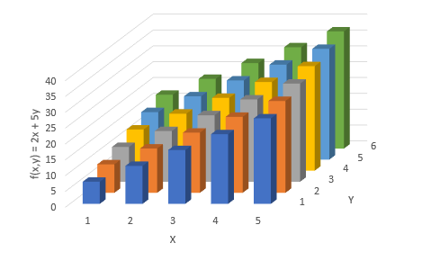

1. Probabilidad
¿La Probabilidad es un sistema axiomático?
a. Axiomas
¿Cuáles son los principios de la Probabilidad?
¿Cuáles son los objetos de estudio de la Probabilidad?
b. Suceso y tipos de sucesos
¿Dónde encuentro ejemplos de este tema?
¿Cómo asignar el valor de probabilidad a un evento?
c. Probabilidad de un suceso
¿Cómo construir ejemplos de espacios muestrales?
¿Qué reglas se establecen para el manejo de las probabilidades?
d. Leyes de las probabilidades
¿Dónde encuentro un resumen de estas leyes?
2. Teorías de Probabilidad
¿Quién fue Thomas Bayes y cuál fue su aporte?
a. Teoría bayesiana
¿Cómo construir casos de Probabilidad Condicional?
¿Qué funciones se definen sobre los eventos?
b. Variables aleatorias
¿Dónde encuentro más información de las
variables aleatorias?
¿Qué es la Esperanza Matemática?
c. Promedio o Media Aritmética
¿Cómo calcular un Valor Esperado?
¿Qué son la Dispersión y la Variabilidad de los resultados de un experimento?
d. Desviación Estandar y Varianza
Cómo calcular la Varianza de una variable aleatoria?
Ejercicio Excel
- La Formula matematica es: 2x + 5y, el resultado se consigno en la siguiente tabla:
- Se conformo la distribucion de probabilidad continua, dividiendo los valores por la constante 660, resultando la siguiente tabla:
- Los valores de las celdas resaltadas correspondientes en las dos matrices son distintos, por tanto las Variables son Dependientes:
- Se creó la siguiente gráfica donde podemos apreciar que en el punto donde la distribución de probabilidad continua es mayor el plano posee también una mayor altura. Además, podemos apreciar que la gráfica tiene más elevación conforme Y es mayor, de acuerdo a lo esperado por la covarianza y el coeficiente de Pearson, dado que estos valores al ser negativos indican una dependencia inversa entre X e Y.
